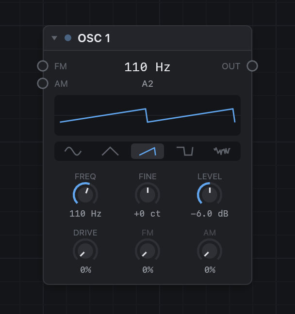

The basic voice of the board, and an LFO below 20 Hz. Its FM and AM inputs take any signal.
| Knob | Function |
|---|---|
| FREQ | 0.1 Hz – 20 kHz, on a logarithmic scale; below 20 Hz it works as an LFO |
| FINE | ±100 cents |
| LEVEL | output amplitude |
| SHAPE | depends on the waveform: Drive (sine, saw), Skew (triangle), Width (pulse), Color (noise) |
| FM | depth of frequency modulation from the FM input |
| AM | depth of amplitude modulation from the AM input |